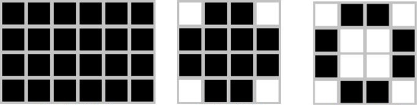
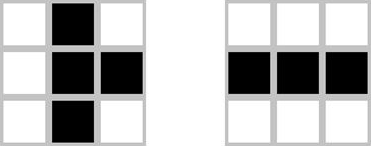
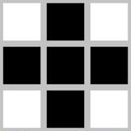
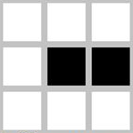
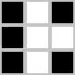
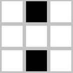
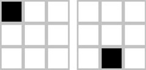

A brief tutorial/intro to the mathematical morphology in image processing.
Basic Definitions
The term morphology refers to the description of the properties of shape and structure of any objects. In the context of computer vision, this term refers to the description of the properties of shapes of areas on the image. Operations of mathematical morphology were originally defined as operations on sets, but it soon became clear that they are also useful in the processing tasks of the set of points in the two-dimensional space. Sets in mathematical morphology represent objects in the image. It is easy to see that the set of all background pixels of binary image is one of the options for a full description. In the first place mathematical morphology is used to extract some properties of the image, useful for its presentation and descriptions. For example, contours, skeletons and convex hulls. Also morphological methods are used in the preliminary and final image processing. For example, morphological filtering, thickening or thinning. The input data for the mathematical morphology are the two images: processed and special, depending on the type of operations and solve problems. Such a special image called primitive or structural element. Typically, a structural element is much smaller than the processed image. Structural element can be regarded as a description of the area with some form. It is clear that the shape can be arbitrary, as long as it can be represented as a binary image of a given size. In many image processing packages the most common structural elements have a special name: BOX [H, W]-rectangle of given size, DISK [R] - drive a given size, RING [R] - the ring of a given size. Typical form of structure elements The result of morphological operation depends on the size and configuration of the original image and the structural entity. The size of the structural element is usually equal to 3 * 3, 4 * 4 or 5 * 5 pixels. This is due to the main idea of the morphological processing, which are search of the specific image detail. The desired item is described by a primitive, resulting in morphological processing, you can highlight or remove such items on the whole image. One major advantage of the morphological process is its simplicity: both the input and output processing procedure, we obtain the binarized image. Other techniques, usually from the original image first get a grayscale image, which is then reduced to binary using a threshold function.
Basic operations
The basic operations of mathematical morphology are the dilation, erosion, closure and disconnection. In these names capture the essence of operations: dilation increases the image, and erosion makes it less, closure operation allows you to close the inner hole region and eliminate the bays along the border area, the operation of disconnection helps get rid of small fragments, protruding regions near its borders. Next will be presented a mathematical definition of morphological operations.
The union, intersection, complement, difference
Before proceeding to the operations of morphology, it makes sense to consider the set-theoretic operations underlying mathematical morphology. The union of two sets A and B, which is denoted C = A ∪ B, is by definition the set of all elements belonging to either the set A, or set B, or both sets simultaneously. Similarly, the intersection of two sets A and B, denoted C = A ∩ B, is by definition the set of all elements that belong simultaneously to both sets A and B. Complement of A is a set of elements not contained in A: Ac = {w | w ∉ A}. The difference of two sets A and B is denoted A \ B and is defined as follows: A \ B = {w │ w ∈ A, w ∉ B} = A ∩ Bc. This set consists of elements A, are not included in set B. Consider all the above operations on a specific example. 
 C = A ∪ B Union  C = A ∩ B Intersection
 C = Ac Complement  C = A \ B Difference
Translation
Translation operation of Xt set of pixels X and the vector t is given in the form Xt = {x + t | x ∈ X}. Consequently, the transfer of many individual pixels on the binary image shifts all the pixels are set at a specified distance. Translation vector t can be specified as an ordered pair (Δr, Δc), where Δr - a component of the transfer vector in the direction of rows, and Δc - a component of the transfer vector in the direction of the image columns.  Translation example
Dilation, erosion, contour closure, opening
For the next operations we consider a specific example. Suppose we have the following binary image and a structural element: